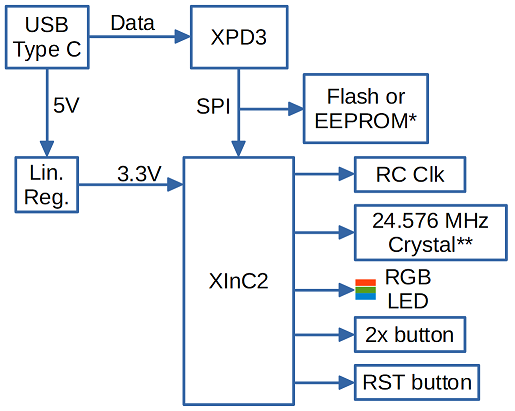
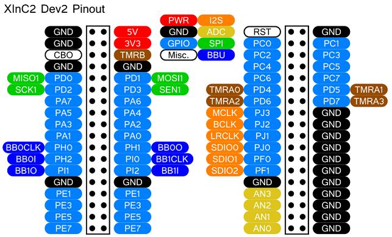
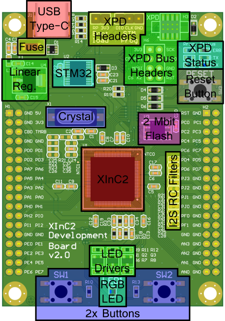
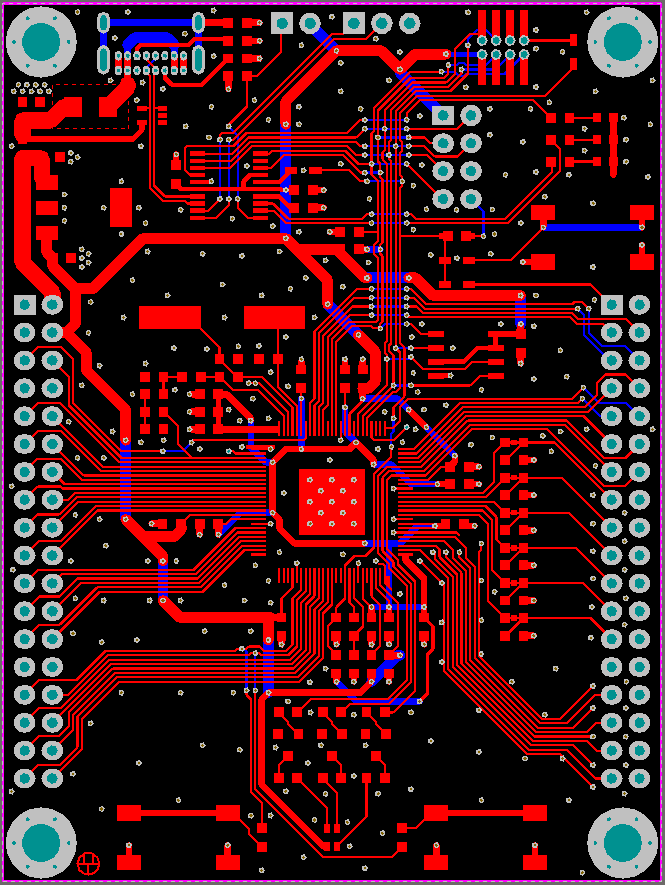
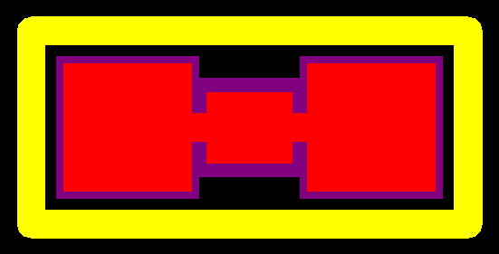
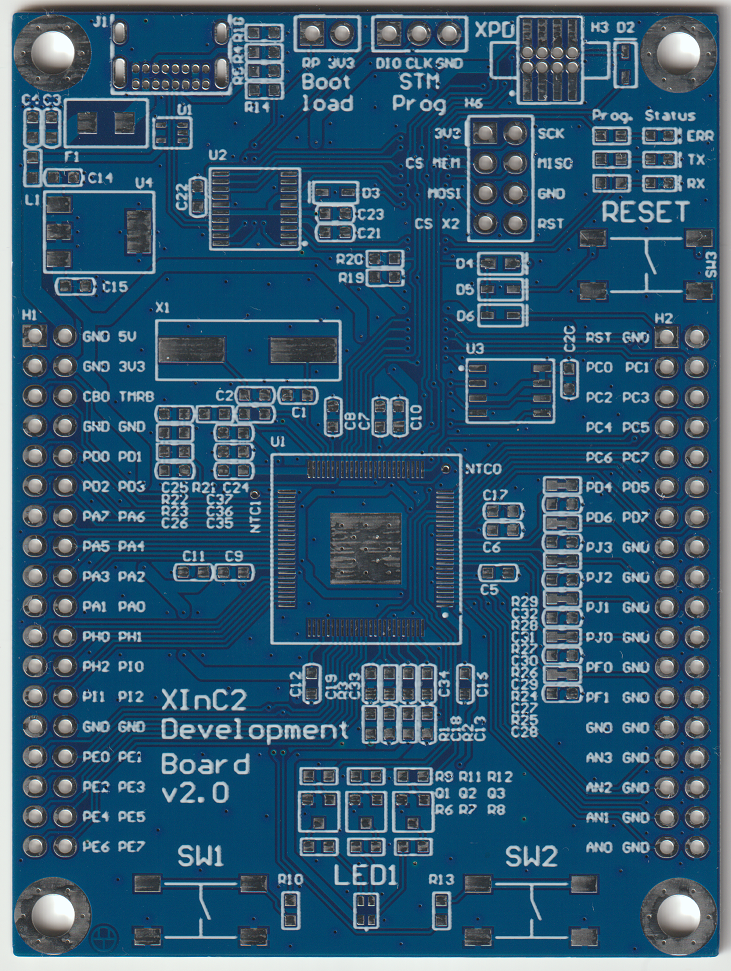
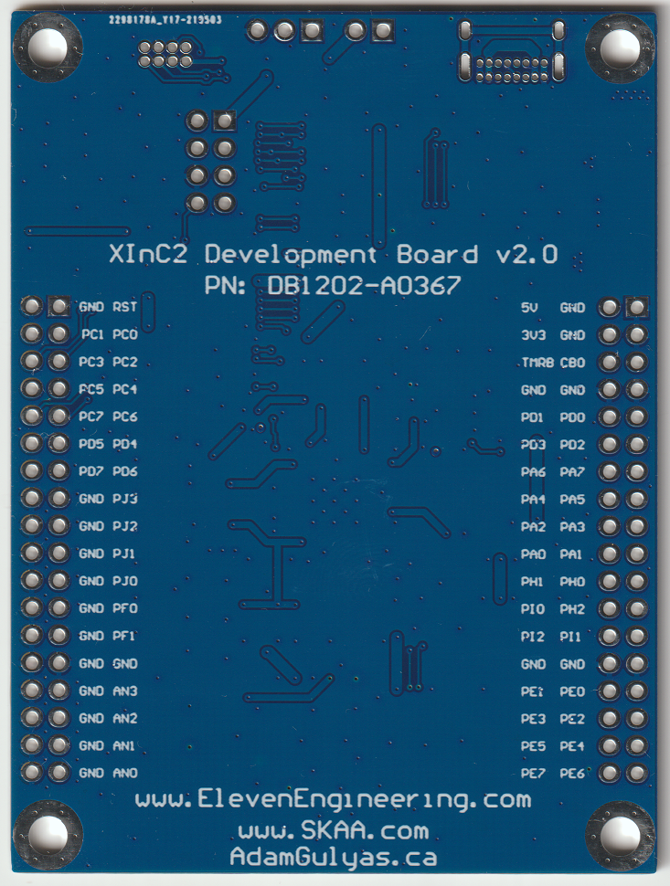
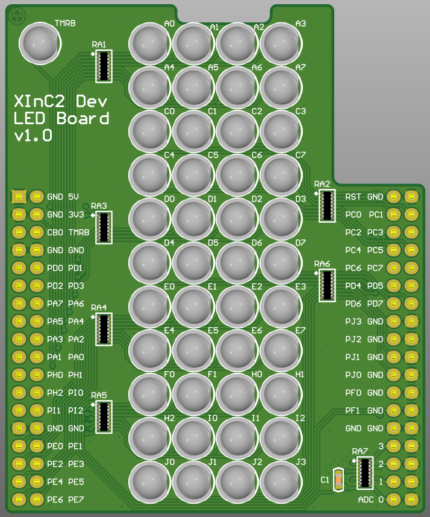
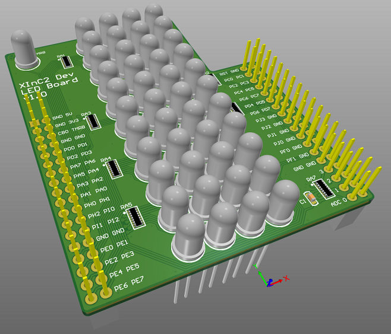

XInC2 Dev2
This project is released under the CC BY-SA license.
Files are available on GitHub.
Description
XInC2 Dev2 is a development board for the XInC2, a microcontroller made by Eleven Engineering. It brings out all the XInC2's user pins, yielding 44 GPIO (4 have PWM output), 4 ADC pins, and 1 pin dedicated to its own timer. It ships with a 24.576 MHz crystal for use with 48 kHz audio applications, which can be increased to 100MHz. It's powered and programmed via USB Type-C, using an STM32F042F4P6 as a USB to SPI convertor. Onboard are two tactile buttons and an RGB LED, enabling the user to get up and running without any additional hardware. Also included is a reset button and 2 MBits of Flash. There are population options to enable software control of the crystal frequency using one of the timer peripherals (called crystal pulling). The target audience is hobbyists, but also the capstone groups from the UofA that Eleven sponsors.
Block Diagram

* Either population option possible.
** A common crystal footprint enable other crystal frequencies.
The XPD3 (XInC2 Programming Device) is Eleven's USB to SPI bridge used to program the XInC2.
This board is basically just a XInC2 and its minimum support circuitry, the circuitry from an XPD, some general use UI and memory, and headers that provide easy access to the XInC2's GPIO. It follows the same design philosophy as Arduino, TI's LaunchPad, or the STM32 Nucleo-64.
A three colour LED was chosen so that any demo showing PWM functionality would be more impressive than a single colour getting brighter and dimmer. Two buttons were chosen because one seemed too few and three seemed too many.
Schematic
Since the minimum support circuitry for the XInC2 and the circuitry for the XPD were already proven to work, there wasn't much circuit design effort needed for this project. It was basically just adding a lot of detail to the block diagram.
I added a header to the SPI bus between the XPD and the XInC2 so that you could easily probe it with a logic analyzer.
There are two pins on the XInC2 labeled NTC0 and NTC1. I believe they are internal thermistors that would enable you to monitor the core temperature of the microcontroller, but no information about them exists in the XInC2 datasheet or user guide. In any case, I brought them out to test points that someone motivated could tap into and experiment with.
A linear regulator was chosen over a buck regulator because of BOM and assembly costs. The reduced noise is also nice for audio projects. The AP2114 was chosen for its low cost, high current output, and familiarity to the client.
A through hole USB jack was chosen over a surface mount one for the added mechanical strength, despite taking longer to solder.
0603 components were chosen over anything smaller because it's the smallest size that has values printed on the resistors. They're also easier to work with.
I made sure there were resistors that could be disconnected to isolate the UI elements from the GPIO, in case a user wanted to repurpose those pins.
The LED resistors were chosen semi-randomly with the intent to tune their values during bring up. Currently the LED is probably too bright and the colors are probably out of balance.
I made sure that the GPIO signals were assigned to the large headers in a somewhat logical/sequential order. Some boards like the LaunchPad don't do this and it's a chore to find the pin you want. I also made sure to keep the PWM capable signals away from the ADC pins to avoid crosstalk.
PCB Design
The PCB layout also followed the same design language as Arduino/LaunchPad/Nucleo-64. Power comes in at the top near the programmer, the main microcontroller is in the center, large headers are on either side, and some basic UI hardware is at the bottom.
It was important to me to copy the design language of the Arduino. Compared to v2.0, the old design was... cluttered. A lot of board space was devoted to extra circuitry you would rarely use. I think the new design is a lot more approachable, especially for someone already familiar with any other common hobbyist dev board.
It's a two layer single sided 1.6mm thick PCB, which should make it cheap to produce and easy to assemble. I designed it to tolerances that any board house should be able to easily meet (0.2 mm trace/space, 0.3/0.6 mm vias). The overall board size is 60 x 80 mm, which is good because the board house I used starts charging more above 100 x 100 mm.
I was lucky that the pins of the XinC2 are on a 0.4mm pitch and the pads are 0.2mm wide. I was able to choose 0.2mm width traces and work on a 0.2mm grid. It was nice to have things snap automatically to the right position and made routing much faster.
One feature requested by Eleven was RC filters on the GPIO that could be assigned to the I2S bus, which are usually used for reducing EMI to pass FCC certification. Since very few (if any) hobbyists will be putting their dev board projects through FCC certification, I didn't really want to add them. They make the board more cluttered and I was aiming for a clean first impression. However, it's important to accommodate reasonable client change requests so I added footprints for them. I didn't want them to be populated by default since most people won't use them and it would decrease BOM and assembly costs. I designed an 0603 footprint with an easily removeable jumper across the pads, a solution which was approved by Eleven. It should be easy for anyone who decides RC filters are needed to peel off the jumper and solder them in.
Ground traces were routed between each ADC trace to reduce cross talk.
The large header pads were slightly thinned so I could route traces between them.
Every pin in the large headers were labeled on both sides of the PCB to make the user's life easier.
Crystal caps are an area of disagreement. I've read whitepapers that swear they should be between the crystal and the microcontroller, and others that swear they should be on the far side of the crystal. In this case I followed Eleven's standard convention and did the former.
The USB connector was placed so it protrudes past the edge of the board. This should make it easier to design cases for the dev board.
The mounting holes have area around them reserved for the bolt head. Some boards (like the Arduino Uno) seem to treat mounting holes like they'll only be used for locating pegs and put components or silkscreen labels right next to the edge of the hole. They also put the holes right next to the edge of the PCB, which increases the risk that the milling bit that's cutting out the PCB will break through.
I didn't panelize the board because Eleven never panelizes their boards.
If I had to do it again, I'd probably round the corners.
Bare PCBs
 After receiving the circuit boards I asked Eleven to send me the parts they'd agreed to at the beginning of the project so I could assemble the PCBAs and test everything. Unfortunately this was just at the beginning of the pandemic IC shortage and Eleven was having trouble getting enough STM microcontrollers to build XPDs. Since the dev board was just a XInC2 and XPD, they couldn't afford to send me anything. The project was put on hold.
Some time later I was able to source the missing microcontrollers and asked Eleven to send me the rest of the parts. I was told that the project had been canceled.
All the design files are available on GitHub, released under the CC BY-SA license. If Eleven ever does decide to build some, it would be nice if they let me know how they turned out.
LED Board
As a side project, I also made an LED shield/feather/hat for the dev board. It just connected an LED to each of the GPIO and could be used for scrolling text, an audio EQ display, or just interesting patterns. It also connected all the ADC pins to voltage dividers so you could practice taking ADC measurements.
 